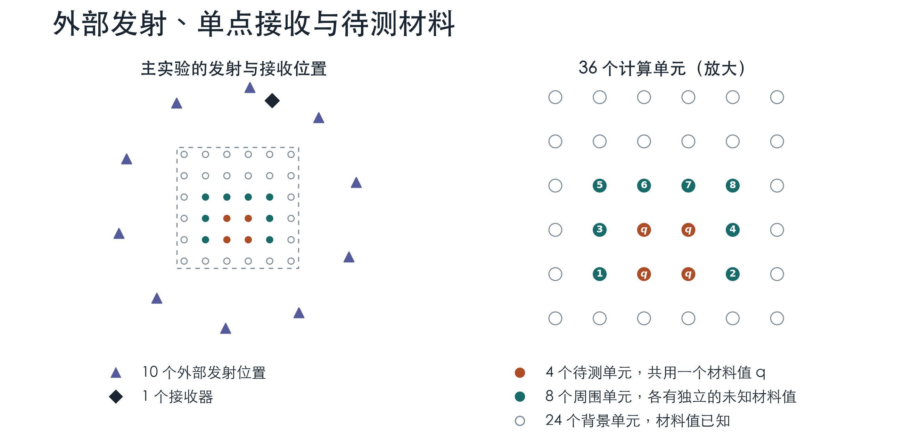
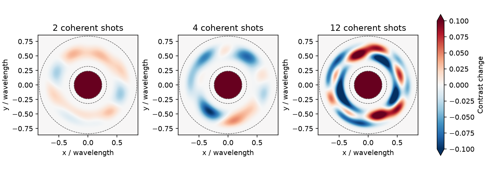

三次照射，能把一小块区域的材料值测多准？
可以先知道目标在哪儿，仍然不知道它是什么材料。在一组独立验证的电磁仿真里，我们让十个发射器配合照三次，估出的目标材料值与真值相差 0.0183（中位数）。同样的能量分十次照，误差降到 0.00919。少测七次的收益和精度代价都看得见。
这个结果依赖对周围环境的了解。我们故意让背景材料偏高 1%，原算法给出的范围随即在 32 个样本里漏掉了 18 个真值。下文从这两个结果讲起。
同一小块里有四个单元，想知道的是它们共有的材料值
图里的 36 个小圆代表计算中实际放入的材料。24 个的材料已知，作为背景。其余 12 个中，有四个排成方形，位置已知，用的是同一种材料；旁边八个各用什么材料都未知。这样共有九个未知数，我们只关心方形区域的那一个。
下文的“材料值”是电磁模型里的介电对比度，表示材料相对背景的介电差异。实验让这个无单位的数在 1 到 15 之间变化。误差 0.0183 和它用同一把尺。

电磁波会在这些单元之间反复散射。我们用完整的二维单频 Maxwell 模型生成接收数据。为检验结论，第二组实验改变了单元间距、背景材料、收发位置，也重新抽取了待测材料。两组各有 16 个方形目标样本。
同样照三次，怎么照会改变结果
每种照法得到数据后，都交给同一个常用反演算法。它从相同的八组初值出发拟合材料，再按与读数的吻合程度选解。表中只评它对那块方形区域估得多准，数字越小越好。
| 发射方式 | 次数 | 第一组 | 独立验证组 |
|---|---|---|---|
| 三次一起设计，能检查整段材料范围 | 3 | 0.01118 | 0.01829 |
| 选三个参考材料值，分别设计一次 | 3 | 0.10109 | 0.10041 |
| 随机选三组发射设置 | 3 | 2.012 | 2.505 |
| 测完阵列的十种独立发射方式 | 10 | 0.00849 | 0.00919 |
比较的是目标材料值的绝对误差中位数。每种照法的总辐射能量均为 2，每组读数允许的总噪声幅度均为 0.0002。实际仪器的切换和采集耗时有待测量。逐样本结果 · 原始对照图
逐个样本看，两组各有 13/16 个目标从“三次一起设计”中受益，比较对象是第二行的三次独立设计。普通反演算法也能用好这三次读数，所以这里的改善可以归给发射方式。两组里测满十次的中位误差仍然更低。
同样三个读数，怎么能检查从 1 到 15 的每个材料值？
假设要检查“目标材料值是不是 7”。计算机可以按为 7 算好的权重，把三次接收的数加起来。三组波形设计得合适时，如果真值就是 7，合成读数就等于一个事先能算出的数，即使旁边八个单元的材料全换了，这个等式依然成立。要检查 8，只需换一组权重重算同样三个数。
于是我们还可以直接列出材料范围。某个候选值对应的偏差大过噪声所允许的幅度，就划掉它；其余的留下。在已知背景的验证组，三次照射给出的范围中位宽度为 0.2154。这条结果回答“这些读数允许材料值在哪儿”，和上表“一次估计偏了多少”是两种读法。
展开看这个判断对应的公式
用 x 表示真实材料值，q 表示试探值。d 是三次的读数，α(q) 是相应权重，c(q) 是已知背景决定的预测。在无噪声模型里有
d α(q) − c(q) = (x − q) g(q)。
固定波的传播算子以后，可从外部发射器合成一组波形，使这个等式对全部合法的邻居材料都成立。邻居仍影响接收强弱 g(q)。因此真值一定通过检验，别的值也可能通过。若整组读数误差的二范数至多为 ε，应保留满足 |d α(q) − c(q)| ≤ ε ‖α(q)‖₂ 的候选值。关于最少照射次数的证明有特定条件，适用于这类能在整段范围消去邻居影响的检验。完整定义、条件和证明
在背景已知的实验中，64 个不同材料样本各用三档噪声计算，192 次得到的范围都包含真值。在最大噪声档，CPU 从一份读数算出目标材料范围的中位时间为 0.30–0.36 毫秒。用八组初值拟合全部材料的中位时间为 73–78 毫秒。这两个时间对应不同的输出。噪声、覆盖和计时记录
同一份读数，有时真的分不清 1.65 和 6.65
把目标从方形四个单元改成 L 形三个单元，再按这套方法设计，需要照四次。此时普通的逐个参考值设计给出了同样有用的四组波形，两种设计在独立验证组的中位误差同为 0.0231。
更重要的是第一组里这个具体样本。四次接收以后，容许的材料值分成两段，约为 1.445–1.851 和 6.575–6.734。我们从两段各取一个值，分别配上可行的周围材料，再用完整波动方程独立计算接收信号。
| 目标材料值 | 算出的信号与读数之差 | 允许误差 |
|---|---|---|
| 1.64787 | 0.0000445 | 0.0002 |
| 6.65485 | 0.0000235 | 0.0002 |
仿真结束后拿真值对照，实际放进去的是 1.63588。第二种解释离它很远，算出的接收信号却贴得更近。实验时只拿得到读数，因此两段都应该留下。这是报告给出材料范围的直接理由。查看这份读数如何留下两段
周围背景只差 1%，范围还能信吗？
我们回到同一批 32 个方形样本，把 24 个已知背景单元的实际材料值一起提高 1%。这会改变波在内部来回传播的方式。下表统计估计范围是否还包含仿真放进去的真实材料值。
| 怎样处理这 1% 的偏差 | 包含真值 |
|---|---|
| 仍按原背景设计发射、解释读数 | 14 / 32 |
| 准确扣去单独的背景信号，仍按原模型解释 | 8 / 32 |
| 先单测一次背景，更新模型，再设计三次照射 | 32 / 32 |
具体做法是先让待测材料位置留空，用一次照射估计背景整体偏了多少。然后把材料放回去，用更新后的模型重新算三次照射该怎么发。两套收发位置各多测一次背景，每次多用 1 单位能量，同一背景下的 16 个样本共用这次读数。
32 个都包含真值，仍需要问范围有多宽。 如果把刚估出来的背景值当成精确值，中位宽度是 0.1745。把测背景本身的不确定性也算进去，中位宽度变为 1.665，最宽达到 7.853。原先容许的全部材料范围宽 14。这给出了“多测一次背景”实际能换回多少分辨力。
这里测试的是背景材料一起按相同比例变化，并假定两次测量之间背景稳定。32 个样本共用两次有噪声的背景估计。误差界的证明针对这个模型，表里的区间端点由数值计算得出。各样本的区间宽度 · 原始数据
如果周围材料能任意变化，再多照几次有用吗？
上面的正面结果约束了未知材料的位置和数量。我们还研究了另一种情形。目标是一个中央圆盘，外侧隔开一段距离有一圈材料，其各处可以独立、平滑地升高或降低。只用一个频率、有限个外部线源和一个近场接收器，能否看出圆盘材料的微小变化？
在均匀二维背景附近，可以把这样的变化完全抵消。 我们证明，对足够小的给定目标变化，外圈总能找到一种材料变化，使所有这些源在接收器产生的读数与原来完全相同。证明给出局部存在性，允许抵消的最大变化幅度仍待确定。

这一步值得写进论文的是什么？
R5、R6 的问题是“同一组读数能对应几种材料解释”。R7 把问题缩到一个实际想知道的量上。已知区域在哪里、区域内材料相同时，可以事先算出几组外部照射，测完以后把与数据相容的材料值都圈起来。换成连续自由变化的周围介质，又可以证明在什么条件下数据根本无法分辨目标。正面结果和反例合起来，说明了哪些背景知识在起作用。
单个材料值上的波形优化、解线性方程和常用反演算法都有成熟先例。值得同行评议的是从外部阵列的实际能力推出覆盖整段材料范围的照射设计、它在指定条件下需要几次读数，以及上面的近场不可辨条件。三次照射的结果没有用到 Q20 找根。下一步最具体的问题，是能否用同一份背景读数缩小 1.665 的范围，并保留对测量误差的保证。
目前与 Inverse Problems 最贴近。若投 SIAM Journal on Imaging Sciences，还需要展示这种范围判断如何改善多区域成像，并与专门优化同一目标的其他方法比较。若投 IEEE Transactions on Antennas and Propagation，实际天线怎样发出这些波形、天线之间的相互影响和样品重复放置的误差，都还需要仪器数据。现有结果全部来自推导与二维数值实验。最接近的原始论文及差别